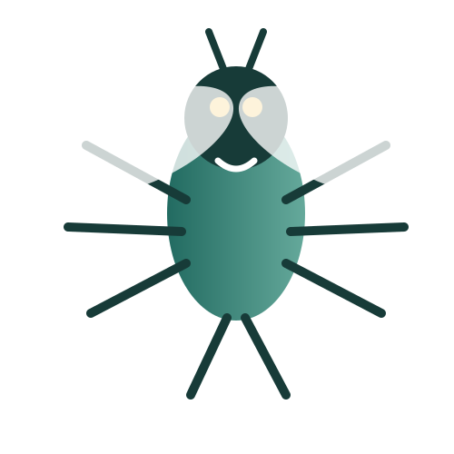
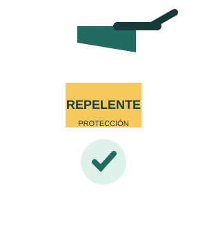

01
¿Qué es?
Una barrera de prevención.
El repelente es una sustancia que ayuda a mantener alejados a ciertos insectos y disminuye la probabilidad de picaduras.
Una bitácora digital para aprender, investigar y compartir hábitos de prevención frente a las picaduras.

El repelente forma parte de la rutina de muchas familias, especialmente en lugares cálidos y húmedos. Sin embargo, utilizarlo correctamente requiere conocer sus indicaciones, advertencias y límites.
En este proyecto investigamos información confiable para convertirla en recomendaciones sencillas que puedan ser comprendidas por estudiantes, familias y miembros de la comunidad educativa.
“La prevención comienza cuando dejamos de asumir y empezamos a informarnos.”
Promover conocimientos y hábitos responsables para reducir el riesgo de picaduras mediante el uso adecuado del repelente y otras medidas preventivas.
¿Qué debemos conocer antes, durante y después de aplicar un repelente?
Haz clic en cada tarjeta para ampliar la información.
Una barrera de prevención.
El repelente es una sustancia que ayuda a mantener alejados a ciertos insectos y disminuye la probabilidad de picaduras.
Para prevenir picaduras.
Su función es complementar otras medidas de protección en lugares donde existen mosquitos que pueden transmitir enfermedades.
Con atención y cuidado.
Se debe seguir siempre la etiqueta. Evita ojos, boca, heridas y piel irritada. Para el rostro, aplica primero en las manos.
Errores comunes.
No lo apliques debajo de la ropa ni cerca de alimentos, y no aumentes la frecuencia de aplicación por cuenta propia.
Nuestra mejor guía.
Permite identificar ingredientes, concentración, advertencias, edades recomendadas y forma correcta de uso.
No todo depende del spray.
También ayuda usar ropa que cubra la piel, mantener espacios limpios y eliminar recipientes con agua estancada.
Objeto principal para observar su etiqueta e indicaciones.
Información revisada durante el análisis.
Herramienta para investigar y organizar el contenido.
Registro fotográfico y consulta de fuentes.
Material educativo de organismos de salud.
Anotaciones, preguntas y conclusiones del proyecto.
Buscamos información y seleccionamos datos útiles para responder nuestra pregunta guía.
Comparamos recomendaciones y observamos la información de las etiquetas.
Transformamos lo aprendido en una bitácora visual, clara y fácil de consultar.
Presentamos el resultado para que otros estudiantes puedan aprender del proyecto.

El producto final es una guía digital que reúne recomendaciones esenciales sobre el uso del repelente y la prevención de picaduras.
Al comenzar, pensábamos que usar repelente era simplemente rociarlo sobre la piel y continuar con nuestras actividades. La investigación nos mostró que pequeños detalles pueden hacer una gran diferencia en la forma en que utilizamos un producto.
También aprendimos que prevenir no significa depender de una sola medida. Leer las indicaciones, proteger la piel, cuidar los espacios donde vivimos y evitar acumulaciones de agua son acciones que pueden complementarse.
Finalmente, comprendimos que investigar no consiste solamente en encontrar información, sino en preguntarnos de dónde viene, si es confiable y cómo podemos explicarla de manera responsable.
El repelente es una herramienta de prevención y debe utilizarse siguiendo su etiqueta.
Aplicar más cantidad o con mayor frecuencia no significa necesariamente obtener mayor protección.
La prevención funciona mejor cuando se combina con otras medidas de cuidado.
Consultar fuentes confiables ayuda a diferenciar recomendaciones correctas de mitos.
Para desarrollar este material se consideraron recursos educativos de organismos de salud pública y prevención de enfermedades, además de la información de las etiquetas de productos.